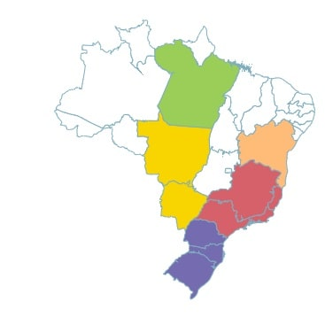

Dash board
Manjericão
Murilo Henrique
QR-code
visualizar
Nome científico: Ocimum Basilicum L. Família: Lamiaceae. Origem: Ásia, Índia. Descrições gerais: O manjericão apresenta caule ereto e ramificado, e atinge cerca de 0,5 a 1 metro de altura. Suas folhas são delicadas, ovaladas, pubescentes e de cor verde-brilhante. As inflorescências são do tipo espiga e compostas por flores brancas, lilases ou avermelhadas. Origem: De origem Asiática, na Índia, onde o Manjericão tem sido cultivado. Possíveis problemas: O pé de manjericão está sob ataque severo de cochonilhas, pequenos insetos que possuem carapaça com aspecto de escama de cor marrom. Pertencem ao grupo dos hemípteros, juntamente com as cigarras, moscas-brancas e pulgões, e fazem parte da família Coccidae. Modo de cultivo: deve ser cultivado sob sol pleno, em solo fértil, bem drenável, enriquecido com matéria orgânica e irrigado regularmente. Podendo ser plantado em vasos ou diretamente em canteiros adubados. Uso da planta: A planta do manjericão tem um uso culinário comum, é ótima companheira dos tomates e ingrediente fundamental para se fazer o famoso pesto genovese, molho típico da Itália. Também vai bem em saladas, massas, sopas, refogados de carne e com queijos.
Manjericão
Murilo Henrique
QR-code
visualizar
Nome científico: Ocimum Basilicum L. Família: Lamiaceae. Origem: Ásia, Índia. Descrições gerais: O manjericão apresenta caule ereto e ramificado, e atinge cerca de 0,5 a 1 metro de altura. Suas folhas são delicadas, ovaladas, pubescentes e de cor verde-brilhante. As inflorescências são do tipo espiga e compostas por flores brancas, lilases ou avermelhadas. Origem: De origem Asiática, na Índia, onde o Manjericão tem sido cultivado. Possíveis problemas: O pé de manjericão está sob ataque severo de cochonilhas, pequenos insetos que possuem carapaça com aspecto de escama de cor marrom. Pertencem ao grupo dos hemípteros, juntamente com as cigarras, moscas-brancas e pulgões, e fazem parte da família Coccidae. Modo de cultivo: deve ser cultivado sob sol pleno, em solo fértil, bem drenável, enriquecido com matéria orgânica e irrigado regularmente. Podendo ser plantado em vasos ou diretamente em canteiros adubados. Uso da planta: A planta do manjericão tem um uso culinário comum, é ótima companheira dos tomates e ingrediente fundamental para se fazer o famoso pesto genovese, molho típico da Itália. Também vai bem em saladas, massas, sopas, refogados de carne e com queijos.
Paineira
Giovana S, Melissa, Isis , Isadora, Lucas M.
QR-code
visualizar

O nome Chorisia é uma homenagem a Luis J. Choris (1795 — 1828), desenhista que ilustrou a Viagem Pitoresca ao Redor do Mundo (1821 a 1823), da expedição chefiada pelo circunavegador russo Otto von Kotzebue (Marchiori, 1995); o termo speciosa é referente à beleza das flores dessa espécie (Santos, 1967). Árvore que pode crescer entre 15 e 30 metros de altura, possui copa globosa com folhas compostas. Suas flores são rosas e suas sementes são amplamente disseminadas pelo vento devido a paina presente no fruto. Floresce a partir de meados de dezembro, prolongando-se até abril. Os frutos amadurecem durante os meses de agosto-setembro. Seu principal uso é decorativo, sua madeira é utilizada para confecção de canoas, cochos e outros. É naturalmente encontrada no bioma da Mata Atlântica, Amazônia, Caatinga, Cerrado, uma espécie nativa, mas também pode ser encontrada na Bolívia. A paineira não é muito exigente quanto ao solo, podendo atingir um bom desenvolvimento até em solos de baixa fertilidade, secos e arenosos. Ocorre também em solos férteis, profundos e humosos, com textura arenosa, franca a argilosa. Prefere solos bem drenados; não tolera solos com lençol freático superficial, sujeitos a inundação, ou várzeas. A árvore se desenvolve em climas tropicais e subtropicais, em temperaturas médias anuais de 20°C e 30°C. Variação de altitude: de 30 m a 1.200 m de altitude, podendo ser cultivada até 2.000 m. Caixa de TextoDe preferência, plantar em solo fértil, irrigar regularmente, sempre em sol constante. “ Coloque as sementes para germinar em sementeira ou saquinhos individuais, em terra misturada a areia e composto orgânico em partes iguais, mantendo-as à meia sombra. Cubra com um tico de substrato peneirado e regue duas vezes ao dia, sem encharcar.” “Podar no final do inverno ou no início da primavera para reforçar o seu potencial de floração. Evite cortes excessivos, pois a paineira armazena água no seu tronco.” Sobre questões comerciais e econômicas, a Paineira é aproveitada na confecção de preenchimento de travesseiros e brinquedos de pelúcia. Suas sementes são comestíveis e podem ser usadas para a produção de óleos e alimentos. A madeira utilizada para fabricação de caixas, canoas e celulose. A paineira apresenta grande valor econômico pelas excelentes características e alto preço de paina, que já chegou a ser exportada. A importância ecológica da Paineira: Abrigam animais na base do tronco, como macacos e periquitos; Os frutos das paineiras fonte de alimento para uma variedade de animais os animais; Auxiliam na produção de oxigênio, como toda árvore; Por serem grandes, auxiliam na regulação climática do local; Principais Problemas: “O coleóptero cerambicídeo Oncideres dejeani, serrador, com danos leves. Mudas passadas nos viveiros têm comumente apresentado manchas foliares causadas por Corynespora cassiicola (Ferreira, 1989). Em paineiras, as manchas têm formatos bastante irregulares, coloração marrom-escura ou marrom-acinzentada e algumas vezes com porções centrais esbranquiçadas. Essas manchas induzem à senescência precoce dos folíolos.” Curiosidades: São da família botânica Malvaceae, essa família tem mais de 90 gêneros e 700 espécies, sendo que cerca de 400 dessas espécies ocorrem exclusivamente no Brasil; Seu ciclo de vida é perene (Representa algo permanente ou que dura vários anos); A espécie cresce rapidamente, atingindo até 6 m em apenas 3 anos; Em média, leva cerca de 4 a 6 anos para que a Paineira Rosa floresça pela primeira vez;
Voltar
Title
Title
Text